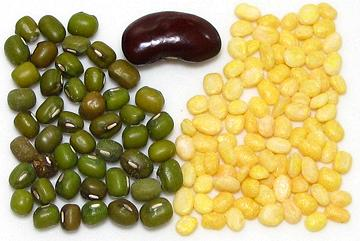
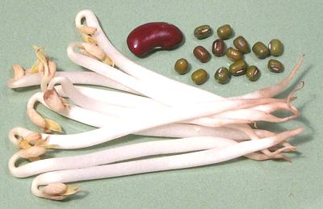
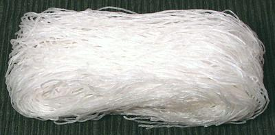
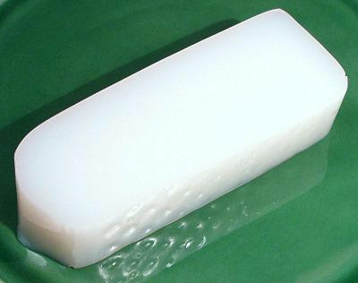

Mung Beans

[Mung (English); Moong,
Green gram, Golden gram (India); Lu dou (China); Dau Xanh (Viet (lit
green bean)); Maash, Mash (Persia, Central Asia); Haricot mungo
(French); Vigna. radiata]
Native to South Asia from Pakistan through Bangladesh, these small
squarish beans are now widely grown in East Asia and around the world.
The dark green beans are most familiar to Americans as the source for the
common bean sprout, but they are much more important as dried beans and
dal in India. Mung beans are also the bean used to make transparent bean
thread noodles popular in East Asian cooking as well as bean jelly and
many desert dishes.
Pictured are the whole beans and the split and peeled form (dal).
Indian markets also often have this bean in split but unpeeled form,
and sometimes in whole peeled form. The dal is easily recognized
because it's more yellow than the dal of similar beans. The photo
specimen whole beans were typically 0.25 inch long and 0.15 inch wide
(6.4 x 3.8 mm). The Dal was 0.20 inch long and 0.12 inch wide
(5.1 x 3.0 mm).
More on Varieties of Beans.
Buying:
Whole mung beans are easily available in South,
East and Southeast Asian markets, and the dal is available in any market
serving an Indian community.
Storing:
Keep beans or dal cool and dry in a sealed
container and mark the container by date purchased. Technically they'll
last for years without spoiling - BUT in practice a year is maximum. With
age they cook less and less well until they simply will not soften, no
matter how long you soak them and how long you cook them.
Soaking:
Whole mung beans need to be soaked in lightly
salted water at least 4 hours and preferably 5. You'll need 2-1/4 cups
of soaking water for every cup of beans, and include 1/2 Tablespoon of
salt to improve soaking. The dal needs to be soaked for at least a half
hour, but if it's old even a couple hours won't help much.
Cooking:
Whole soaked beans will cook in about 45
minutes. Unsoaked they'll need at least an hour, maybe more, and they
tend to fall apart a lot more than soaked beans. Soaked dal should be
cooked for around 1/2 hour depending on how soft you want it. In India
it's normally cooked until like a thick soup, but if the dal is old it
will never soften.
Mung Bean Sprouts

In India, whole mung beans are often sprouted before cooking, but only
until the root tail is about 1/2 inch and the leaf end is just emerging.
For Chinese and Southeast Asian use bean sprouts are fully sprouted to
about 3 inches long and when the first real leaves start to unfold.
Buying & Storing:
Any market serving an East or
Southeast Asian community, most produce stores and many supermarkets
will have these. Look for very crisp white stems with no sign of
discoloration. The root end will always be discolored as in the photo,
and they will often have some of the green shells adhering to the leaf
end, but those should rinse away.
Prep:
In general, you just rinse them. In Korea, no respectable
housewife would think of serving bean sprouts without neatly pinching off
the ugly root end, but we're not usually that picky in North America.
Sometimes packages with the root end cut off can be found in Korean
markets, but more often that's done with the larger soybean sprouts.
Cooking:
Less is best. In North America we often serve
them raw, but in China, where nothing is served raw (due to traditional
agricultural practices), they are generally cooked just until no longer
brittle. In some cases they are squeezed dry after a brief cooking.
Bean Thread Noodles

These noodles are much used in East and Southeast Asia. While they are
produced in many forms, one of the most common is a 2 ounce skein as shown
in the photo. This is the ideal size for many recipes. The photo specimen
was 5 inches long and made of strands 0.025 inches (0.6 mm) diameter.
Raw, these noodles look almost exactly the same as Rice Sticks, but
they must not be confused. Cooked they are totally different and not at
all interchangeable.
Buying & Storing:
These can be found
in any market serving an East or Southeast Asian community - and in most
supermarkets. In a cool, very dry place they will keep for two or three
years without degrading significantly.
Cooking:
These noodles are always soaked in warm water
for about 20 minutes (soaking longer isn't going to further soften them).
They are then added to recipes at the very last moment and given the
minimum cooking that will bring them up to temperature.
Mung Bean Jelly

This product is sold as 1 pound blocks with the consistency of stiff Jello.
The block this cross section was cut from was 4-1/2 inches wide and 1-3/4
inches thick. Mung Bean Jelly is most popular in Korea, but a version
is used to a lesser extant in southern China.
Buying:
This product is most available in Korean markets.
It will usually be stocked refrigerated with similar blocks of other gels.
bp_mungz 071028 - www.clovegarden.com
©Andrew Grygus - agryg@clovegarden.com - Photos on
this page are © cg1 - Linking to and
non-commercial use of this page permitted